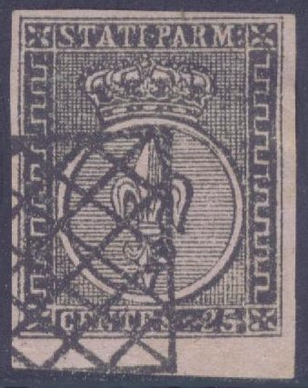
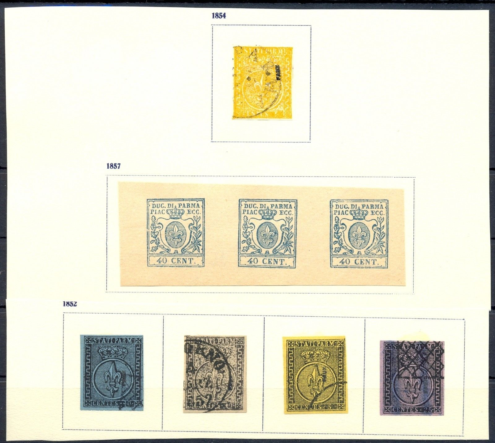
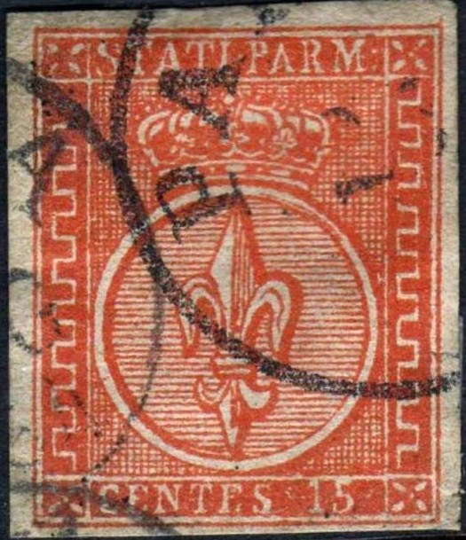
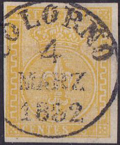
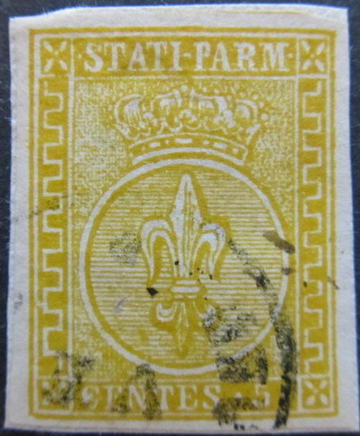

Return To Catalogue - Parma 1852 issue, forgeries, part 2 - Parma 1852 issue, forgeries, part 3 - Parma 1852 issue - Parma 1857 issue - Parma 1859 issue, part 1 - Parma 1859 issue, part 2 - Italy
Note: on my website many of the
pictures can not be seen! They are of course present in the
catalogue;
contact me if you want to purchase the catalogue.
Currency: 1 Lira = 100 Centesimi
The above forgeries have two dots behind "PARM" as a ":". This is probably a Spiro forgery (Filatelie Informatief May 1985 p 7010-3). The cross on top of the crown is almost below the "I" of "STATI". The white circle is nearer to the left hand side frame than to the right hand side frame. The top of the fleur-de-lis is touching the circle above it (in the genuine stamps it does not touch). The lines behind the fleur-de-lis are much less coarse than in the genuine stamps. The cancels are circular or a grille cancel (about the size of the stamp, a similar real cancel exists, but about 1/4 size of the stamp). This is the first forgery described in 'Album Weeds' and it is also described in 'The Spud Papers'. There are much less lines in the circle than in a genuine stamp.

Here the 10 c black value with another forged cancel as often
appears on many Spiro forgeries of other countries.
Whole sheets of these forgeries, they exists with cancel
"PARMA 25" or with a a rectangle with crossed lines
inside (resembling a genuine cancel type!).
These forgeries with 'FAUX' overprint, as they can be found in
'The Fournier Album of Philatelic Forgeries'
Page of a 'Fournier Album of Philatelic Forgeries' showing the
second choice forgeries on the top row and a block with better 40
c forgeries (see under 'Fourniers' first choice forgeries'.


Forgery of the 15 c, further enhanced with a forged "PARMA
15 MAG 1854" cancel (on the left) as can also be found in
the Fournier Album.
Fournier also offers the above forgeries in his 1914 pricelist for 1.50 Swiss Francs (he offers 6 values as second choice forgeries). It should be noted that Fournier also offered first choice forgeries of this issue (see also later).

Forged Fournier cancels of Italy, taken from a Fournier Album;
reduced sizes, among them the "COLORNO 4 MARZ 1852"
cancel
I think the above stamps must be the second
forgery described in the book Album Weeds. There
is only 1 line of shading between the circle and the top of the
fleur de lys symbol (should be 2). The cross on top of the crown
is nearer to the "I" than to the "P" (it
should be exactly in the middle). The background behind the crown
looks different than the originals (should be regular fine
points). There should be 4 pearls in each of the outer arches of
the crown (the above stamp has 5 ) and 3 in the inner arches (the
above stamp has 4). The dot between "STATI" and
"PARM" is more like a "-". Note also the
thick line between the circle and the crown (in the genuine
stamps it is much smaller). The left side ornamenal border only
has 7 1/2 elements, in the genuine stamp, there are 8 1/2
elements (this is an easy test). The cancel of the 15 c red
forgery doesn't correspond to the genuine cancels used in Parma.
I've also seen a 15 c red of this set of forgeries, with part of
a circular cancel and additionally a 'FRANCO' in a box cancel.
Very similar forgeries, but the label with "STATI PARM" is placed lower than the two upper corner ornaments.



Other forgeries: There is a wide space between the inner circle
and the left hand border. Furthermore, the background behind the
circle consists of small irregular dots. The label with
inscription "STATI PARM" is placed lower than the two
upper corner ornaments (in the genuine stamps they are all on the
same level). Note the two different "15" in the 15 c
red forgeries. The bogus "VF"
cancel can also be found on many other
forgeries
For more forgeries of Parma 1852 issue, forgeries, part 2, click here.


{kind=link}
{kind=link}
{kind=link}
{kind=link}